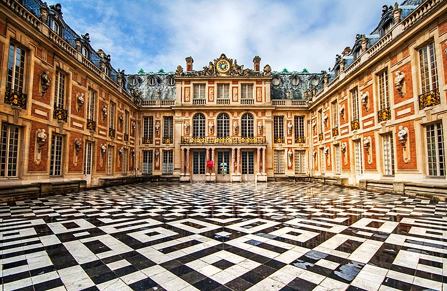
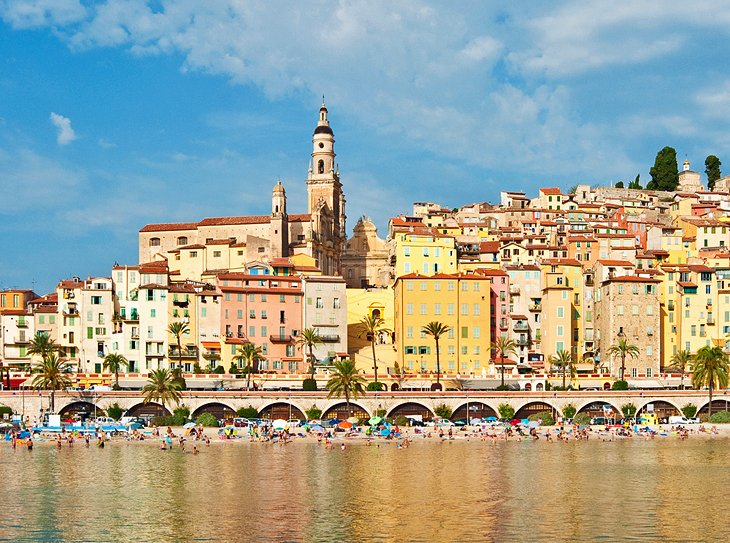
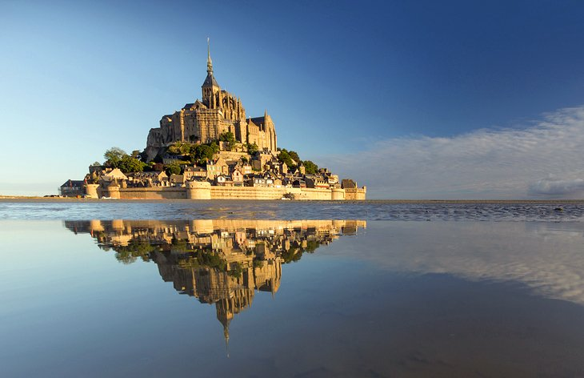
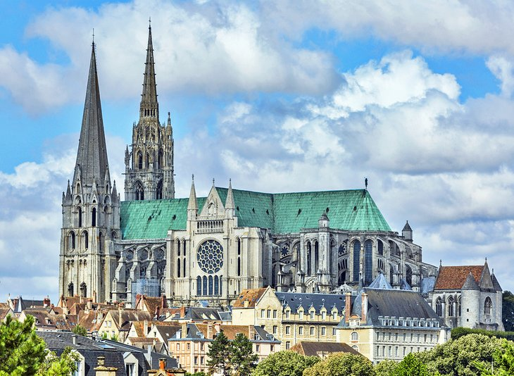
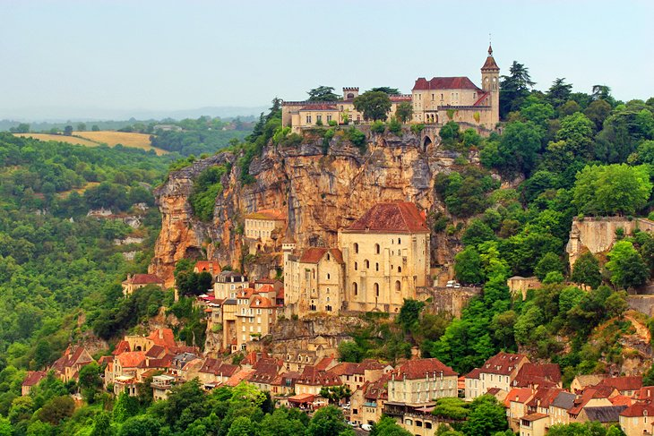
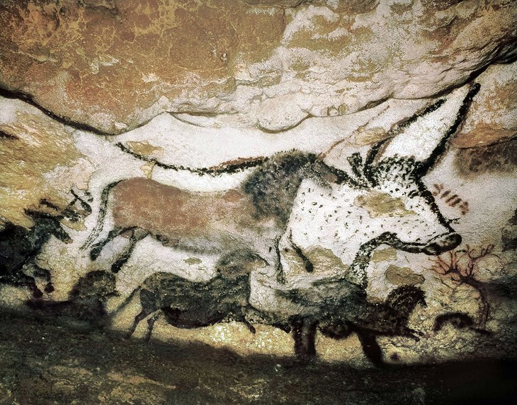

VISITING PLACE OF FRANCE

1. Eiffel Tower
The symbol of Paris, the Eiffel Tower is a feat of ingenuity as much as it is a famous landmark.

2. Louvre Museum
In a stately palace that was once a royal residence, the Louvre ranks among the top European collections of fine arts.

3. Palace of Versailles
More than just a royal residence, Versailles was designed to show off the glory of the French monarchy.

4. Côte d'Azur
English speakers, this glamorous seaside destination is known as the French Riviera, words that have a ring of sun-drenched decadence.

5. Mont Saint-Michel
Rising dramatically from a rocky islet off the Normandy coast, the UNESCO-listed Mont Saint-Michel is one of France's most striking landmarks.

6. Loire Valley Châteaux
Traveling through the Loire Valley feels like turning the pages of a children's storybook. Throughout the enchanting countryside of woodlands and river valleys are fairy-tale castles complete with moats and turreted towers.

7. Cathédrale Notre-Dame de ChartresEditor's Pick
For more than eight centuries, the magnificence of Chartres Cathedral has inspired the faithful, and some say this sublime sanctuary has restored belief in the doubtful.

8. Provence
Provence is a gorgeous landscape of olive groves, sun-drenched rolling hills, and deep purple lavender fields, with little villages nestled in the valleys and perched on rocky outcrops.

9. Chamonix-Mont-Blanc
The awesome spectacle of Mont Blanc in the French Alps is an unforgettable sight. The highest mountain peak in Europe, Mont Blanc soars to 4,810 meters.

10. Alsace Villages
Some of the prettiest villages in France are tucked away in the green, rolling hills of Alsace, where the Vosges Mountains border the Rhine River of Germany.

11. Carcassonne
With its turreted towers and crenellated ramparts, Carcassonne seems straight out of a fairy-tale scene.

12. Brittany
Brittany is a beautiful historic region on the northeastern coast of France.

13. Biarritz
Biarritz is a fashionable beach town on the beautiful Bay of Biscay in France's Basque country.

14. Rocamadour
Suspended between heaven and earth on a sheer limestone cliff, Rocamadour is an unforgettable sacred site.

15. Prehistoric Cave Paintings in Lascaux
Visitors can delve into the fascinating world of prehistoric art in Lascaux, the finest example of Paleolithic art in the world.